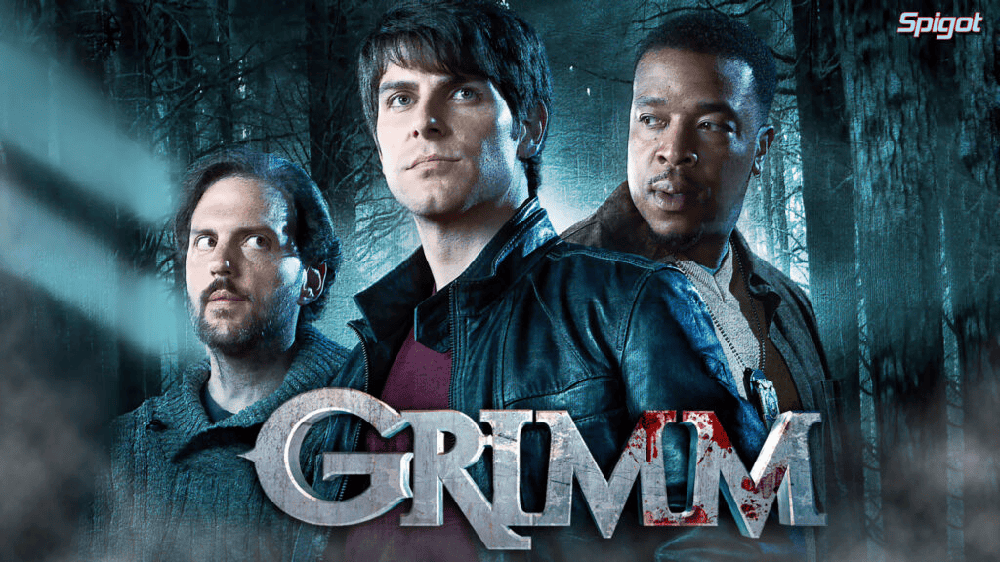
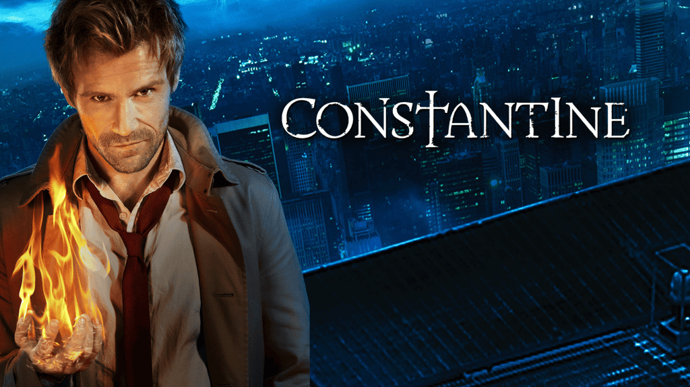

Sugestões Para Você
The X-Files (Arquivo X)

Se você gostou de Supernatural, é quase certo que vai adorar The X-Files. A série, que estreou em 1993, é considerada um dos maiores sucessos de ficção científica e mistério de todos os tempos. O enredo gira em torno dos agentes do FBI Fox Mulder e Dana Scully, que investigam casos não resolvidos, conhecidos como “arquivos X”, que envolvem fenômenos paranormais, conspirações governamentais e, claro, muitas criaturas sobrenaturais.
Buffy: A Caça-Vampiros
Outro clássico que os fãs de Supernatural vão adorar é Buffy: A Caça-Vampiros. A série acompanha Buffy Summers, uma jovem que descobre ser a “Escolhida”, uma caçadora de vampiros que tem a missão de proteger a humanidade das forças do mal. Ao longo da série, Buffy enfrenta não apenas vampiros, mas também demônios, bruxas e outras criaturas sobrenaturais.
Grimm

Para quem é fã da mitologia e das criaturas sobrenaturais em Supernatural, Grimm é uma excelente opção. A série, que estreou em 2011, segue a história de Nick Burkhardt, um detetive que descobre ser descendente de uma longa linhagem de caçadores conhecidos como “Grimms”, cuja missão é manter o equilíbrio entre o mundo dos humanos e o dos Wesen, criaturas sobrenaturais que inspiraram os contos de fadas dos irmãos Grimm.
Constantine

Baseada nos quadrinhos da DC Comics, a série Constantine segue a vida de John Constantine, um detetive paranormal e exorcista que luta contra forças demoníacas e tenta proteger o mundo dos perigos sobrenaturais. Se você gosta da temática de demônios e exorcismos que permeia boa parte de Supernatural, vai encontrar em Constantine uma série parecida nesse sentido.
Lucifer
Por fim, não poderíamos deixar de mencionar Lucifer, uma série que, assim como Supernatural, também lida com elementos religiosos e mitológicos de forma criativa. Na trama, o Diabo em pessoa, Lucifer Morningstar, decide abandonar o Inferno e abrir uma boate em Los Angeles. Ao longo da série, Lucifer começa a trabalhar como consultor da polícia, usando suas habilidades sobrenaturais para resolver crimes, enquanto lida com questões existenciais e tenta entender sua própria humanidade.